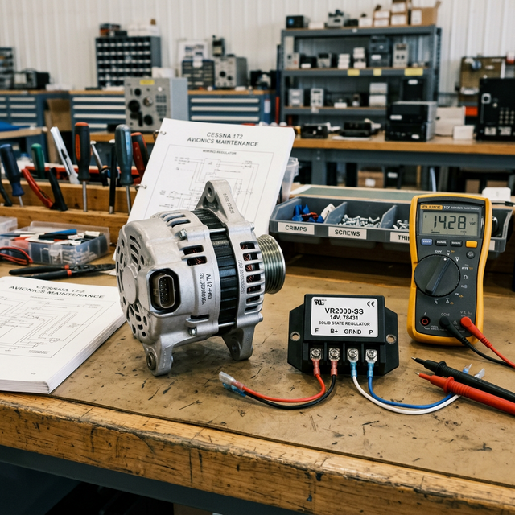

Power generation and regulation
Module Objectives
- Contrast the operational characteristics of alternators versus older generators.
- Explain how a voltage regulator controls alternator output.
- Identify the purpose of capacitors and inductors in alternator noise filtering.
Why Does This Matter?

You are performing an engine run-up on a Cessna 172 to verify the charging system. At idle (800 RPM), the bus voltmeter reads 28.2V. At 2,000 RPM, it still reads exactly 28.2V. You turn on the landing lights, pitot heat, and all avionics (adding 30 amps of load). The voltage briefly dips, then instantly snaps right back to 28.2V. How is the system maintaining such aggressive stability across wild changes in engine speed and electrical load? The answer is the Voltage Regulator, and understanding it is how you diagnose flickering lights, dying batteries, and over-voltage trips.
What You Need To Know
Alternators vs. Generators
Older aircraft used DC generators; nearly all modern aircraft use alternators.
- Low-RPM output: Alternators produce usable charging power even at engine idle. Older generators required high cruise RPMs to charge the battery, leading to dead batteries during long taxi operations.
- Lighter weight: Alternators are significantly lighter than generators of equivalent output power.
- Operation: Alternators technically produce AC power internally. This internal AC is passed through a rectifier (a bridge of six diodes) built into the back of the alternator, which converts the AC into the smooth DC required by the aircraft bus.
The Voltage Regulator
An alternator cannot regulate itself. Without control, its output voltage would spike to 80+ volts at high RPM and drop to 10 volts at idle. The Voltage Regulator (VR) is the "brain" of the charging system. It maintains a consistent, stable output voltage (typically 28V or 14V) regardless of RPM or load.
How it works: The regulator monitors the bus voltage. If the voltage drops (because you turned on a heavy load), the regulator increases the field current flowing into the alternator's spinning rotor. More field current creates a stronger magnetic field, which forces the alternator to produce more power, bringing the bus voltage back up. If the bus voltage gets too high (RPM increases), the regulator chokes back the field current.
If the VR fails:
- Fails Open (No field current): Alternator output drops to zero. The aircraft runs entirely on battery power until it dies.
- Fails Closed (Full field current): Alternator output spikes out of control (Over-voltage condition), which can boil the battery acid and destroy avionics. (Luckily, modern systems employ Over-Voltage Relays to automatically trip the alternator offline if this happens).
Alternator Noise (The Avionics Killer)
Because alternators rectify AC into DC, the resulting DC isn't perfectly flat — it has a slight, high-frequency ripple known as alternator whine. This noise easily infiltrates avionics audio systems. To silence this, the alternator's output is passed through a Low-Pass Filter:
- Capacitors are utilized to shunt high-frequency AC ripple directly to ground.
- Inductors (Chokes) are wired in series to actively block high-frequency noise from passing down the wire.
System Visualization
graph TD
A[Engine Rotation driven via belt] --> B[Alternator AC Generation]
B --> C[Internal Diode Rectifier]
C --> D[Unregulated DC Output]
E[Voltage Regulator] -->|Controls Field Current| B
D -.->|Feedback Loop| E
D --> F[Capacitor/Inductor Noise Filter]
F --> G[Clean, Regulated 28V DC to Main Bus]
style E fill:#1e40af,stroke:#1e3a8a,stroke-width:2px,color:#fff
style F fill:#166534,stroke:#14532d,stroke-width:2px,color:#fff
On The Job
If a pilot complains that the panel lights flicker or pulse with engine RPM, the voltage regulator is likely failing to smoothly modulate the field current. If a pilot complains of a high-pitched whine in their headset that changes pitch exactly as they advance the throttle, the alternator diodes or the noise filter capacitor has failed, allowing AC ripple onto the avionics bus.
Reference Terms
Alternator vs. generator
Alternators are preferred in modern aircraft because: (1) they produce usable charging voltage at low RPM (including idle), and (2) they are lighter than generators of equivalent output. Generators require higher RPM to produce the same output and are heavier.
Voltage regulator
The voltage regulator controls alternator or generator field current to maintain a consistent output voltage (typically 28V ±0.5V in aircraft). Without it, alternator output would vary with RPM and load, potentially overcharging the battery or under-powering avionics.
Alternator noise filtering
Capacitors and inductors (chokes) are used to filter alternator-generated electrical noise from the DC bus. Capacitors shunt high-frequency noise to ground; inductors block high-frequency noise from passing through. Together they form a low-pass filter keeping the bus clean for sensitive avionics.
Alternator
An engine-driven generator that produces AC internally and rectifies it to DC using diodes; effective even at low engine idle RPM.
Field Current
The control current fed into the alternator rotor that determines the ultimate output power of the alternator.
Rectifier (Diodes)
Internal alternator components that convert alternating current (AC) into direct current (DC).
Assessment Check
Alternators produce the power via engine rotation, but the voltage regulator is what controls the field current to keep that power stable for sensitive avionics across all flight conditions. --- ---